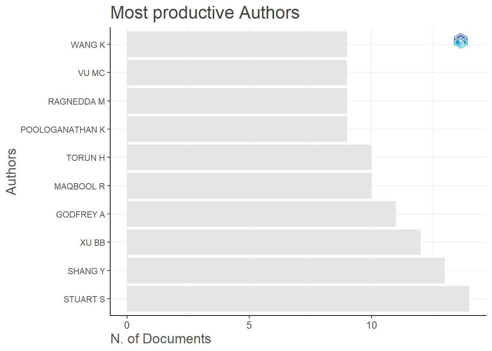
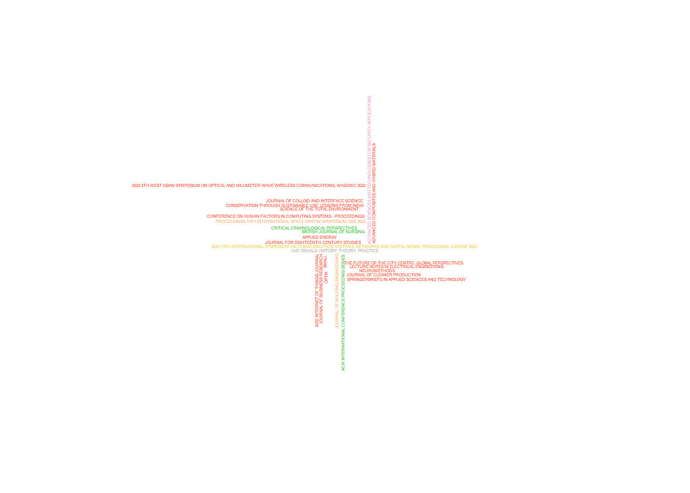

Bibliometrics and Open Science Summary
This project has looked into several repositories of bilbiometric data from Scopus, Web of science, OSF, PURE and PLOS, to consider open science practices across Northumbria University.
In terms of total publications classified as Green open access for corresponding Northumbrian authors there are 738 publications, for none green open access there are 218.
plot_result_green<-plot(x = result_green, k = 10, pause = F)
This shows Northumbrian Authors who publish in journals which allow green open access, Stuart S being the most productive (in terms of number of publications).
plot_result_not_green<-plot(x = result_not_green, k = 10, pause = F)plot_result_not_green[["MostProdAuthors"]]This shows Northumbrian Authors who publish in journals which are not green Open Access, FU YQ being the most productive (in terms of number of publications).
As shown of the top 25 journals for green open access, PLOS ONE is the most popular publication with 25 total publications, followed by Buildings and Sensors with 9 each and then Journal of Criminal Law with 7.
DF_SO_table_not_green_sorted <- as.data.frame(SO_table_not_green_sorted)
wourdcloud_not_green_publications<- wordcloud(words = DF_SO_table_not_green_sorted$Var1, freq = DF_SO_table_not_green_sorted$Freq, min.freq = 1, max.words=25, random.order=FALSE, scale=c(.25,0.25), rot.per=0.35, colors = piratepal("xmen")) ##Just the TOP 25
As shown above the top 25 journals for non green open access, Advanced Sciences and Technologies for Security is the most popular publication with 12 total publications, followed by Critical Criminological Perspectives with 8 and Journal of Building Engineering with 5.
Call:
glm(formula = cited ~ green_or_not, family = binomial, data = full_oa_for_analysis)
Coefficients:
Estimate Std. Error z value Pr(>|z|)
(Intercept) -0.1754 0.1587 -1.105 0.2690
green_or_not1 0.3271 0.1688 1.937 0.0527 .
---
Signif. codes: 0 '***' 0.001 '**' 0.01 '*' 0.05 '.' 0.1 ' ' 1
(Dispersion parameter for binomial family taken to be 1)
Null deviance: 1903.1 on 1375 degrees of freedom
Residual deviance: 1899.3 on 1374 degrees of freedom
AIC: 1903.3
Number of Fisher Scoring iterations: 3As can be seen by the general linear model output. There is a difference in amount of citations between green publications and none green open access. Though not significant, green publications tend to have more publications with at least one citation.